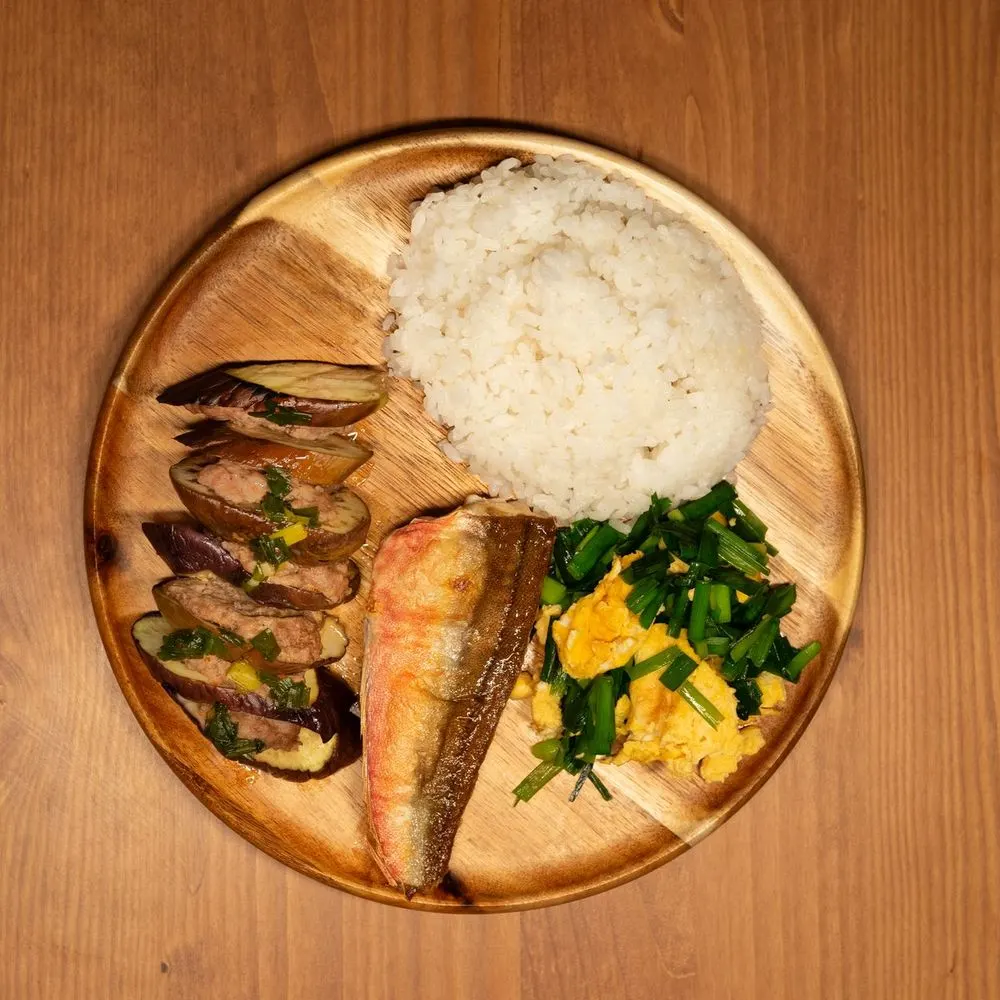

はじめての方限定 お試し4食
温めるだけで、
主菜と副菜3品が
そろう夜。

- 4品主菜＋副菜3
- 約6分レンジで
- 縛りなし1回だけOK
通常価格 3,480円
初回 2,480円税込・送料込
※ 通常価格は2026年8〜10月の販売価格。
初回価格は12/31までのお申し込みが対象（架空）
Worry
平日の夕食、
こんなお悩みありませんか？
- 献立を考えるのが毎日しんどい
- 惣菜を買うと揚げ物ばかり
- まとめ買いの宅配は冷凍庫に入らない
ことこと膳なら
温めるだけで、主菜＋副菜3品。
 01副菜まで、だしの味だしをきかせた副菜を毎回3品
01副菜まで、だしの味だしをきかせた副菜を毎回3品 021食ごとに数値を表示エネルギー・食塩相当量など
021食ごとに数値を表示エネルギー・食塩相当量など 03冷凍庫に入る薄型容器4食で引き出しの3分の1ほど
03冷凍庫に入る薄型容器4食で引き出しの3分の1ほど
※ 架空のデモです。商品は実在しません。
Menu
お試し4食のメニュー
 MENU 01鶏の照り焼き312kcal食塩相当量 2.0g
MENU 01鶏の照り焼き312kcal食塩相当量 2.0g MENU 02さわらの塩焼き298kcal食塩相当量 1.8g
MENU 02さわらの塩焼き298kcal食塩相当量 1.8g MENU 03豚の生姜焼き345kcal食塩相当量 2.2g
MENU 03豚の生姜焼き345kcal食塩相当量 2.2g MENU 04鮭とさつまいもの甘煮305kcal食塩相当量 1.6g
MENU 04鮭とさつまいもの甘煮305kcal食塩相当量 1.6g
※ 数値は架空のデモです（栄養成分は抜粋）。
Set & Price
セットと価格
- お試し4食2,480円1食 620円
1回限り - 定期 6食4,680円1食 780円
- 定期 10食7,200円1食 720円
すべて税込・送料込。定期便は次回お届けの5日前まで、お休み・解約できます。
注文してから届くまで
- STEP 1申し込み
- STEP 2平日に発送
翌日お届け - STEP 3冷凍庫へ
配送・保存について
- 冷凍便でお届けします。届いたらすぐ冷凍庫へ。
- 発送は平日だけ。お届けは火〜土曜です。
- 冷凍で約2か月保存できます。
※ 架空のデモです。価格・商品・配送のルールは実在しません。
Voice
お客様の声
- 副菜があるのが助かります主菜は作れても副菜までは無理だったので、3品ついているのがうれしいです。30代・共働き
- 冷凍庫に収まるサイズまとめ買いの宅配は入りきらなかったけれど、4食ならちょうど入りました。40代・一人暮らし
※ デモ用の架空の声です。
まずは、お試し4食から
初回 2,480円税込・送料込
このページの「買い物かごに入れる」から
お申し込みください
※ 架空のデモです。価格・商品・声は実在しません。